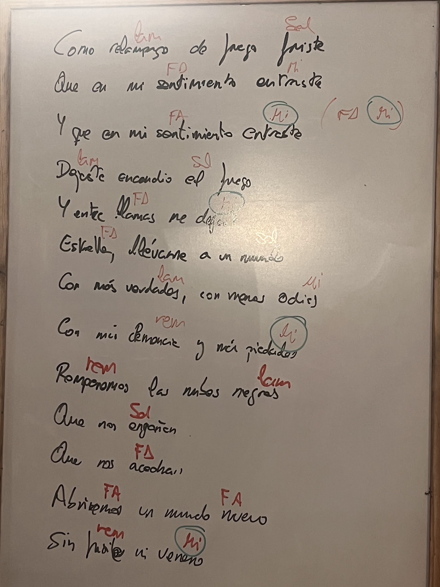

Tango · guitarra y voz · 1:36 · cejilla en el 2º traste · la pizarra se ilumina al ritmo del vídeo
Los tiempos de cada verso se han estimado escuchando el audio y pueden ir un poco adelantados o atrasados. Mientras suena, pulsa M (o el botón) justo cuando empiece el verso siguiente. Los cambios se guardan en este navegador.
